Jihan Yang
Member of Technical Staff @ AMI Labs |
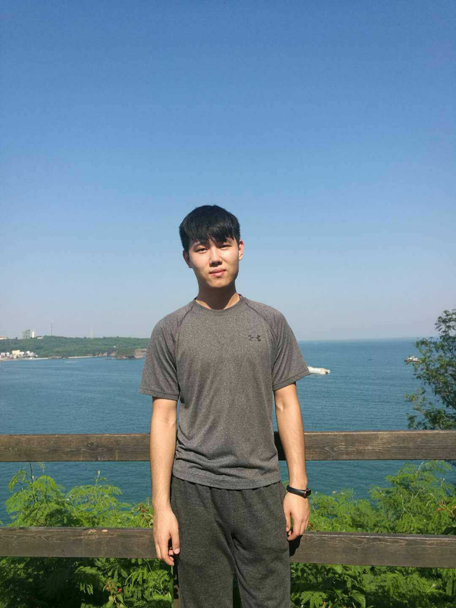 |
Biography
I am a founding scientist at AMI Labs. Before that, I was a postdoctoral fellow at NYU Courant, working with Prof. Saining Xie. I received my Ph.D degree from The University of Hong Kong, advised by Prof. Xiaojuan Qi. Prior to that, I obtained my Bachelor's degree from Sun Yat-sen University.
My research interests lie in machine learning and computer vision, focusing on world modeling and multimodal learning.
Selected Projects [Google Scholar]
*: Equal Contribution
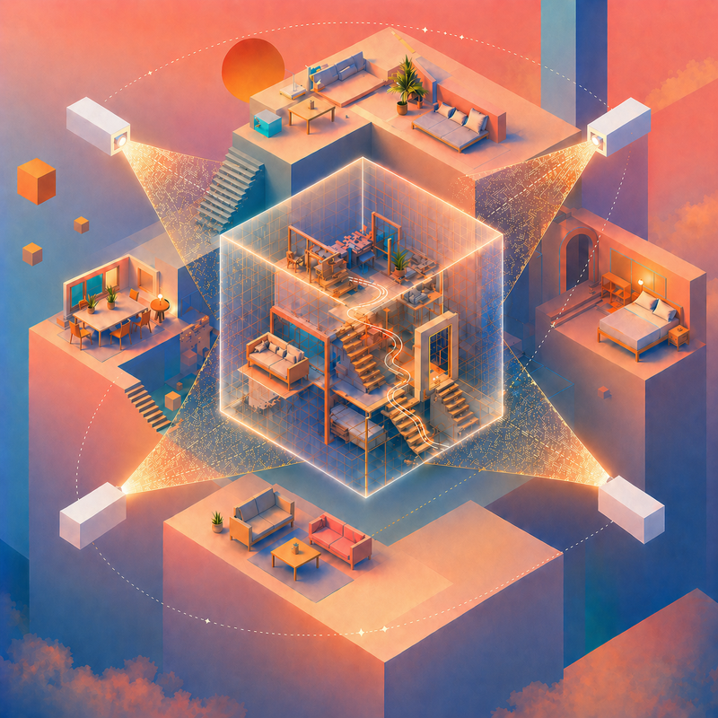
Cambrian-P: Pose-Grounded Video Understanding
Jihan Yang*, Zifan Zhao*, Xichen Pan, Shusheng Yang, Junyi Zhang, Bingyi Kang, Hu Xu, Shang-Wen Li, Saining Xie
European Conference on Computer Vision (ECCV), 2026
PDF
Blog
Code
Data
Model
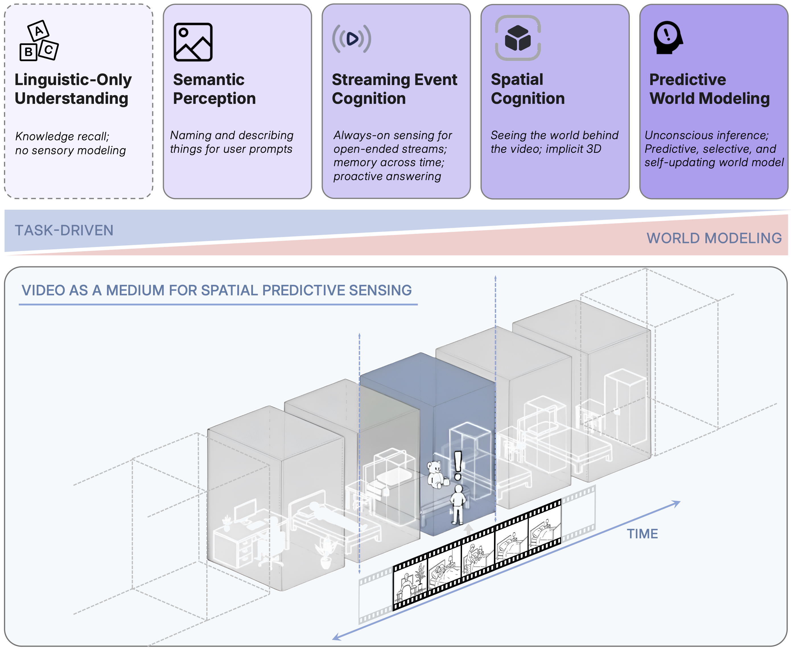
Cambrian-S: Towards Spatial Supersensing in Video
Shusheng Yang*, Jihan Yang*, Pinzhi Huang†, Ellis Brown†, Zihao Yang, Yue Yu, Shengbang Tong, Zihan Zheng, Yifan Xu, Muhan Wang, Daohan Lu, Rob Fergus, Yann LeCun, Li Fei-Fei, Saining Xie
International Conference on Learning Representations (ICLR), 2026
PDF
Blog
Code
Data
Model
Bench

Benchmark Designers Should “Train on the Test Set” to Expose Exploitable Non-Visual Shortcuts
Ellis Brown, Jihan Yang, Shusheng Yang, Rob Fergus, Saining Xie
Conference on Language Modeling (COLM), 2026
PDF
Blog
Code
Bench
Data
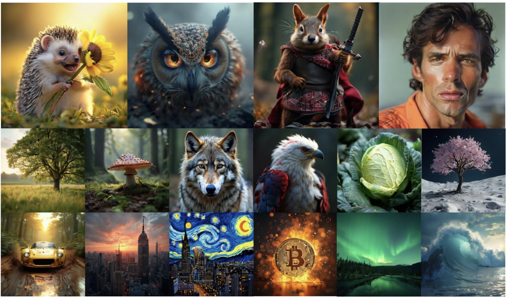
UniTok: A Unified Tokenizer for Visual Generation and Understanding
Chuofan Ma, Yi Jiang, Junfeng Wu, Jihan Yang, Xin Yu, Zehuan Yuan, Bingyue Peng, Xiaojuan Qi
Advances in Neural Information Processing Systems (NeurIPS) 2025.
[Spotlight]
PDF
Blog
Code
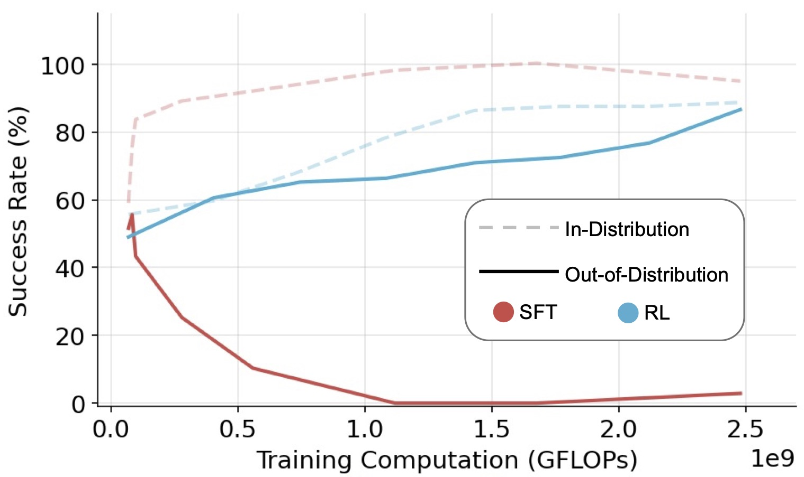
SFT Memorizes, RL Generalizes: A Comparative Study of Foundation Model Post-training
Tianzhe Chu*, Yuexiang Zhai*, Jihan Yang, Shengbang Tong, Saining Xie, Dale Schuurmans, Quoc V. Le, Sergey Levine, Yi Ma
International Conference on Machine Learning (ICML), 2025
PDF
Blog
Code
Data
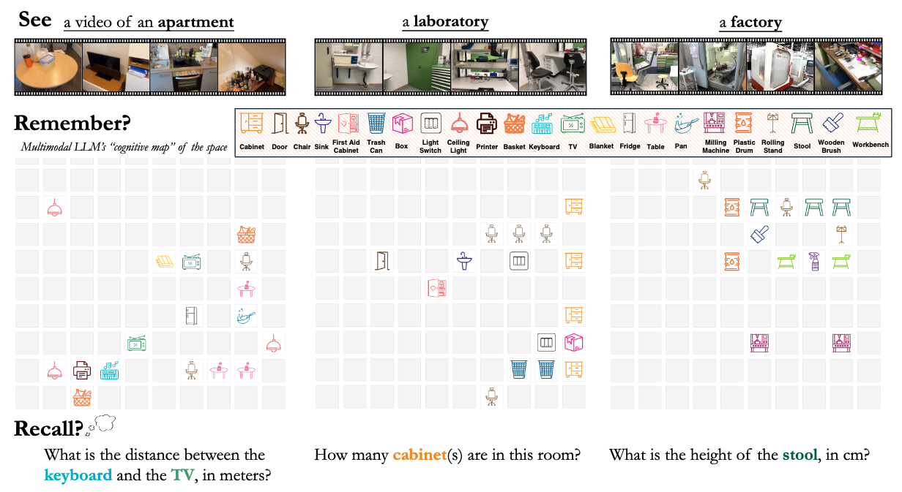
Thinking in Space: How Multimodal Large Language Models See, Remember, and Recall Spaces
Jihan Yang*, Shusheng Yang*, Anjali W. Gupta*, Rilyn Han*, Li Fei-Fei, Saining Xie.
IEEE Conference on Computer Vision and Pattern Recognition (CVPR), 2025
[Oral]
PDF
Blog
Code
Bench

Cambrian-1: A Fully Open, Vision-Centric Exploration of Multimodal LLMs
Shengbang Tong*, Ellis Brown*, Penghao Wu*, Sanghyun Woo, Manoj Middepogu, Sai Charitha Akula, Jihan Yang,
Shusheng Yang, Adithya Iyer, Xichen Pan, Austin Wang, Rob Fergus, Yann LeCun, Saining Xie.
Advances in Neural Information Processing Systems (NeurIPS) 2024.
[Oral]
PDF
Blog
Code
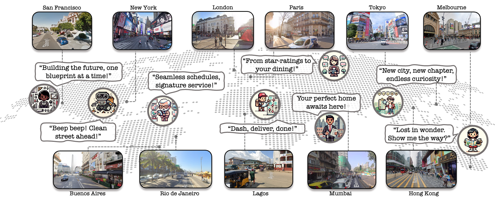
V-IRL: Grounding Virtual Intelligence in Real Life
Jihan Yang, Runyu Ding, Ellis Brown, Xiaojuan Qi, Saining Xie.
European Conference on Computer Vision (ECCV), 2024.
PDF
Blog
Code
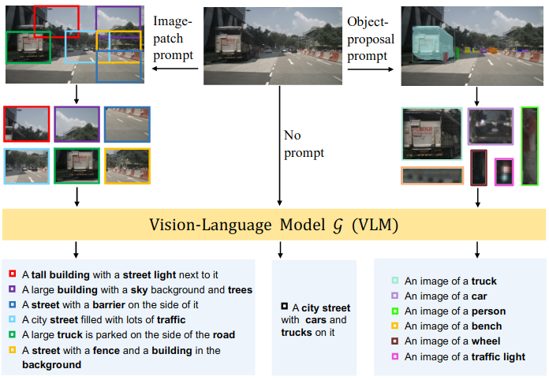
RegionPLC: Regional Point-Language Contrastive Learning for Open-World 3D Scene Understanding
Jihan Yang*, Runyu Ding*, Weipeng Deng, Zhe Wang, Xiaojuan Qi.
IEEE Conference on Computer Vision and Pattern Recognition (CVPR), 2024
PDF
Blog
Code
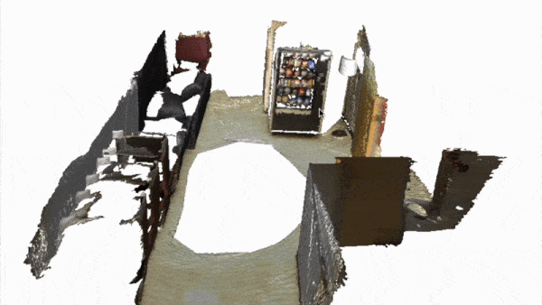
PLA: Language-driven Open-Vocabulary 3D Scene Understanding
Runyu Ding*, Jihan Yang*, Chuhui Xue, Wenqing Zhang, Song Bai, Xiaojuan Qi.
IEEE Conference on Computer Vision and Pattern Recognition (CVPR), 2023
PDF
Blog
Code
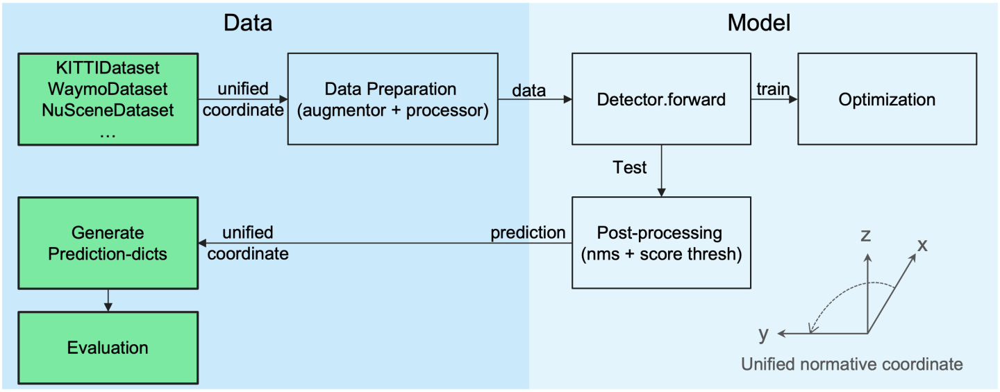
OpenPCDet: An Open-source Toolbox for 3D Object Detection from Point Cloud
OpenPCDet Development Team (2nd Core Developer)
Code
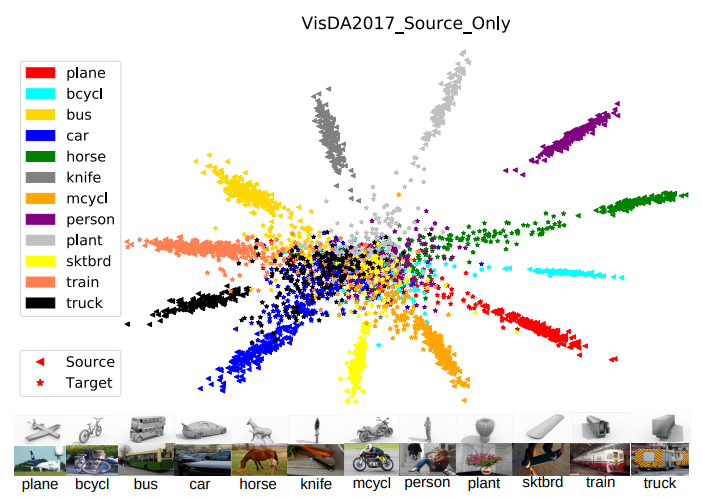
Larger Norm More Transferable: An Adaptive Feature Norm Approach for Unsupervised Domain Adaptation
Ruijia Xu, Guanbin Li, Jihan Yang, Liang Lin
IEEE International Conference on Computer Vision (ICCV), 2019.[Oral]
Best Paper Award Nomination (one of the seven among 1,075 accepted papers) refer to here.
PDF
Code
Invited Talks
| 2025/10: Invited talk @ Spatial Intelligence Seminar, Shanghai AI Lab | Towards Spatial Supersensing |
| 2025/09: Invited talk @ Twelve Labs | Thinking in Space |
| 2025/06: Invited talk @ University of Hong Kong | Thinking in Space |
| 2025/04: Invited talk @ University of Washington, NeuroAI Shlizerman Lab | Thinking in Space |
| 2025/03: Invited talk @ Johns Hopkins University, CCVL Research Group | Thinking in Space |
| 2025/02: Invited talk @ Bytedance, Seed Team | Thinking in Space and SFTvsRL |
Academic Services
Conference Reviewer:
- CVPR: 21/22/23/24/25
- ICCV: 21/25
- ECCV: 22/24
- NeurIPS: 23/24
- ICLR: 24/25
- ICML: 25
- IROS: 23
- AAAI: 21
- MM: 24
- IEEE Transactions on Pattern Analysis and Machine Intelligence (T-PAMI)
- International Journal of Computer Vision (IJCV)
Visitors
Loading visitor statistics…